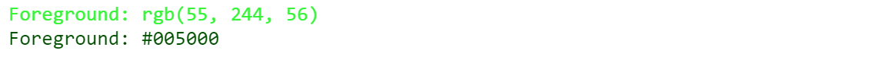
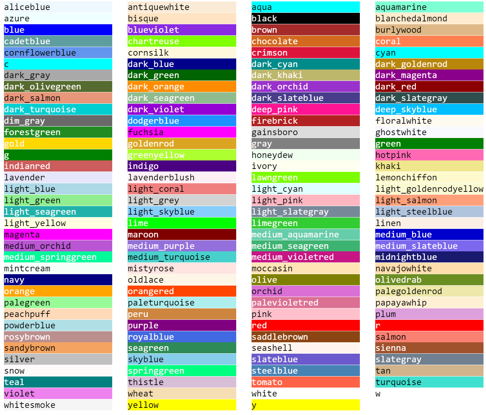
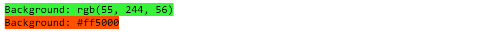
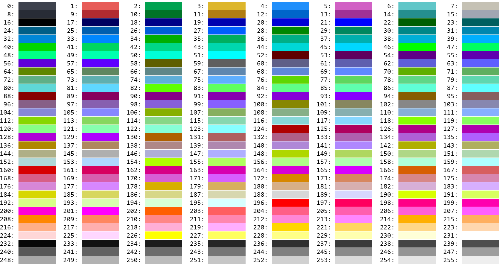
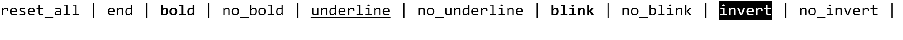
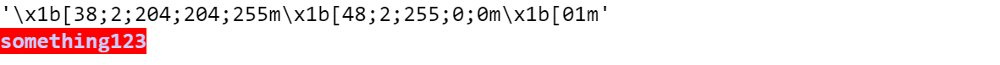
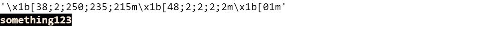

Fore.aliceblue, Back.blue, Style.bold('\x1b[38;2;240;248;255m', '\x1b[48;2;0;0;255m', '\x1b[01m')Basic usage:
Fore['red'], Fore.blue
Back['yellow'], Back.black
Style['bold'], Style.underlineFore and Back also suport rgb and hex format:
Fore['123, 242, 5'], Fore['(123, 242, 5)'], Fore['#ffffff']
Back['123, 242, 5'], Back['(123, 242, 5)'], Back['#ffffff']_AnsiColor (name='fore')
name: style, fore, back
You could use Fore, Back and Style to get the text foreground, background and style ansi escape code. If the input is not accepted, they would return empty string ''
Some ansi escape code example:
Fore.aliceblue, Back.blue, Style.bold('\x1b[38;2;240;248;255m', '\x1b[48;2;0;0;255m', '\x1b[01m')Only Back and Style support uppercase.
Fore.BLACK, Back.BLACK, Style['BOLD']('', '\x1b[48;2;0;0;0m', '\x1b[01m')Basic usage:
Fore['red'], Fore.blue('\x1b[38;2;255;0;0m', '\x1b[38;2;0;0;255m')Other available colors are in Fore.available:
def _get_background(color):
background = (
Back['75, 70, 75']
if sum(Color[color].rgb) / 3 > 165 else
Back['240, 250, 250']
)
return background
for i, c in enumerate(Fore.available):
background = _get_background(c)
print(background, end='')
end = '\n' if (i+1) % 4 == 0 else '\t'
print(f'{Fore[c]}{c:21s}{Fore.reset}', end=end)
print(Back.reset_all)
Fore also support rgb and hex format:
Fore['(1, 2, 3)'], Fore['#ffffff'], Fore((111, 222, 55))('\x1b[38;2;1;2;3m', '\x1b[38;2;255;255;255m', '\x1b[38;2;111;222;55m')print(Fore['55, 244, 56'] + 'Foreground: rgb(55, 244, 56)' + Fore.reset)
print(Fore['#005000'] + 'Foreground: #005000' + Fore.reset)
Basic usage:
Back['red'], Back.blue('\x1b[48;2;255;0;0m', '\x1b[48;2;0;0;255m')Other available colors are in Back.available:
def _get_foreground(color):
foreground = (
Fore['5, 7, 7']
if sum(Color[color].rgb) / 3 > 160 else
Fore['255, 250, 250']
)
return foreground
for i, c in enumerate(Back.available):
foreground = _get_foreground(c)
print(foreground, end='')
end = '\n' if (i+1) % 4 == 0 else '\t'
print(f'{Back[c]}{c:21s}{Back.reset}', end=end)
print(Fore.reset)
Back also support rgb and hex format:
Back['(1, 2, 3)'], Back['#ffffff'], Back((111, 222, 55))('\x1b[48;2;1;2;3m', '\x1b[48;2;255;255;255m', '\x1b[48;2;111;222;55m')print(Back['55, 244, 56'] + 'Background: rgb(55, 244, 56)' + Fore.reset)
print(Back['#ff5000'] + 'Background: #ff5000' + Fore.reset)
Fore and Back also support 8-bits color:
for i in range(256):
end = '\n' if (i+1)%8 == 0 else ' '*2
print(f'{i:3}: {Back[i]} {Back.reset}', end=end)
Basic usage:
Style['bold'], Style.underline('\x1b[01m', '\x1b[04m')Only list the commonly used styles

“reset_all” and “end” would reset all the ansi escape code function
AnsiColor (fore:str=None, back:str=None, style:str=None)
Integrate with Fore, Back, Style.
| Type | Default | Details | |
|---|---|---|---|
| fore | str | None | Foreground color. Could be hex, rgb string or tuple, Fore, 8-bits color |
| back | str | None | Background color, Could be hex, rgb string or tuple, Back, 8-bits color |
| style | str | None | Text style. Seee Style.available. |
Basic usage:
# #| output: false
ansi_fmt = AnsiColor(fore='#ccccff', back=Back['red'], style='bold').ansi_fmt
print(repr(ansi_fmt))
print(ansi_fmt + 'something123')
# #| output: false
ansi_fmt = AnsiColor(fore=Fore.antiquewhite, back=Back['(2, 2, 2)'], style='bold').ansi_fmt
print(repr(ansi_fmt))
print(ansi_fmt + 'something123')
ansi = AnsiColor(fore=Fore['56, 12, 34'], back=(78, 90, 120), style=('bold', 'underline'))
ansi.fore, ansi.back, ansi.style('\x1b[38;2;56;12;34m', '\x1b[48;2;78;90;120m', '\x1b[01m\x1b[04m')ansi = AnsiColor(fore='108', back=177)
ansi.fore, ansi.back('\x1b[38;5;108m', '\x1b[48;5;177m')